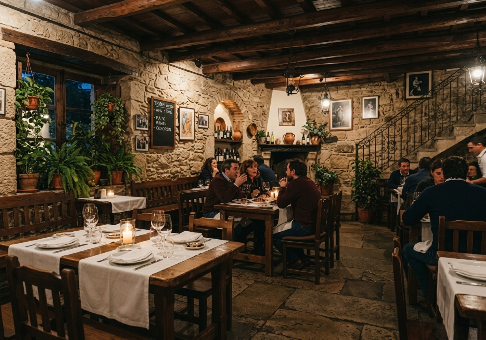
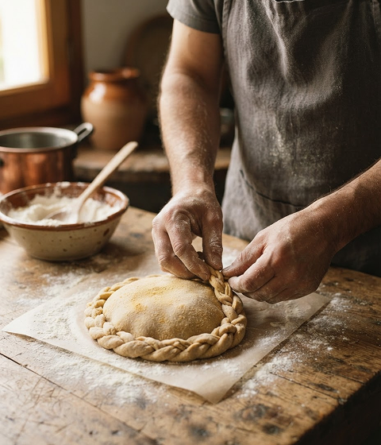

El espacio
Donde el calor del horno se junta con la alegría de los que comparten el camino.
CONÓCENOS
Nuestra historia y nuestra manera de recibirte. Un espacio para poner rostro, palabras y recuerdos a o forno do peregrino.

La mesa se llena de platos, pero lo que realmente alimenta es la compañía.
NUESTRA HISTORIA
Nacimos en lo alto del Monte do Gozo con la ilusión de ser el último refugio del caminante. Inspirados en los antiguos hornos gallegos donde el fuego y la masa unían a la gente, abrimos nuestras puertas para celebrar la llegada a Santiago con empanada artesana, vino de la tierra y la cálida hospitalidad de nuestro hogar.
Guardamos en la memoria cada risa compartida alrededor de la mesa, el crujido del pan recién sacado del horno y las historias de quienes cruzan nuestra puerta. Detrás de cada plato están las manos de nuestra gente y el cariño por la tradición, porque este lugar no lo hacen solo sus paredes, sino cada persona que se sienta a compartir nuestra mesa.


UNA MIRADA A NUESTRA CASA

Donde el calor del horno se junta con la alegría de los que comparten el camino.

El mimo en cada horneado, la huella de la tradición y el alma de la tierra servida en cada plato.

Donde el fuego del horno nunca se apaga para alimentar la travesía del caminante.
EL EQUIPO
En la Cocina: Jorge y Anxo
Amigos, guardianes del fuego y de la receta de la
empanada.
“Para nosotros, cocinar es cuidar. Cada masa que amasamos y cada plato que sale del horno lleva el respeto por las recetas de nuestra tradición y el deseo de que sintáis el verdadero sabor de Galicia en cada bocado.”